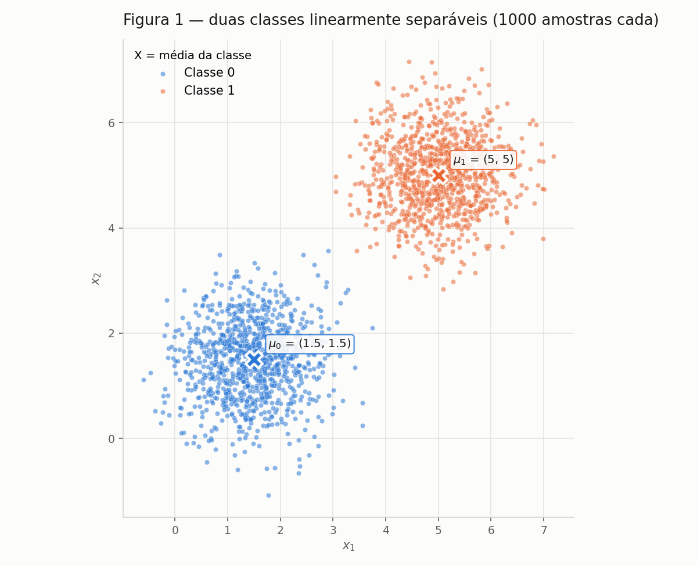
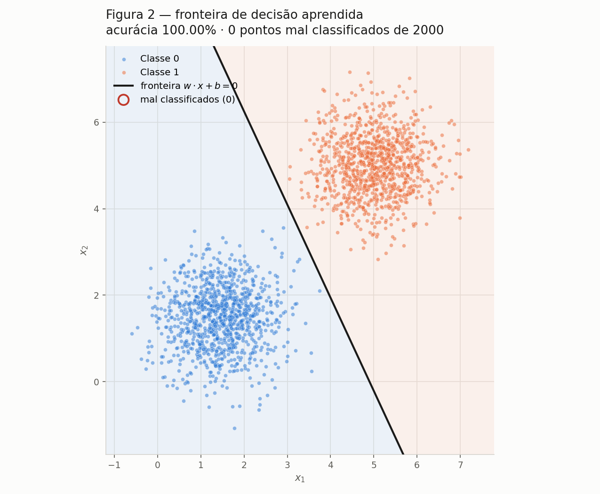
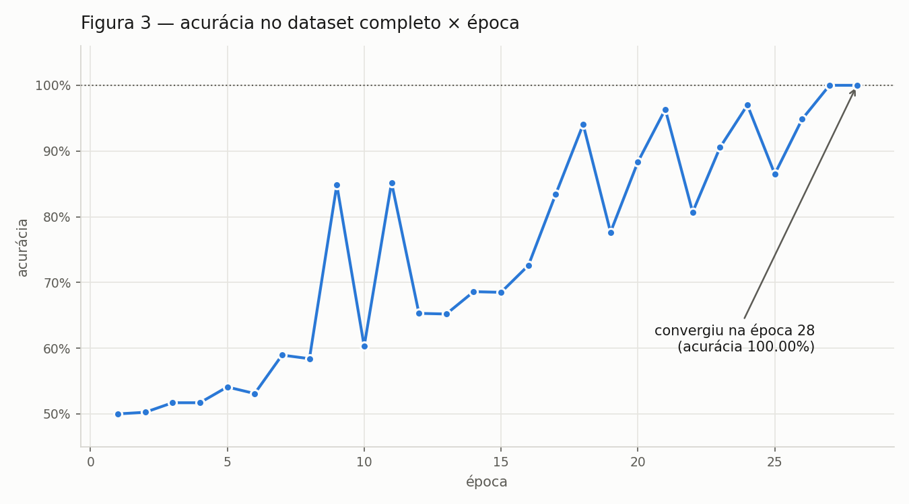
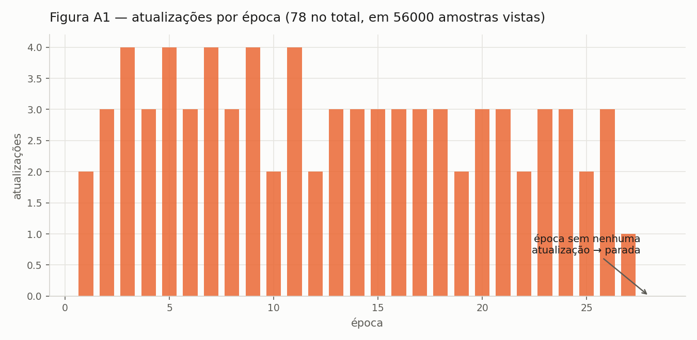
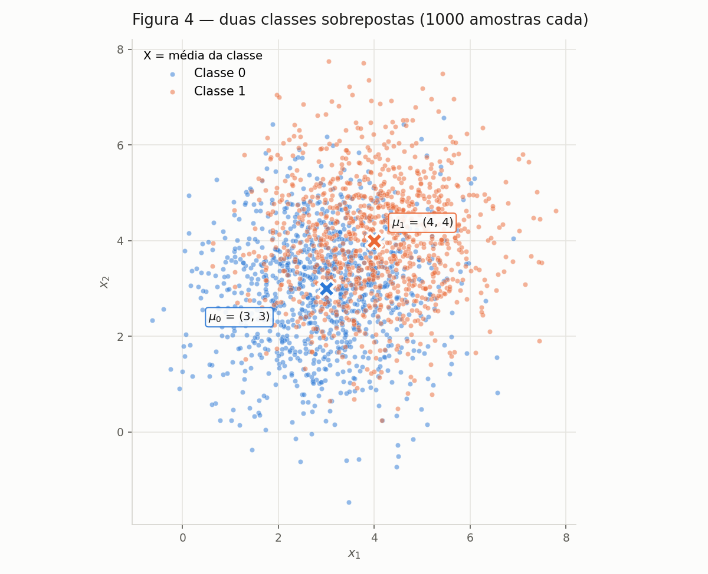
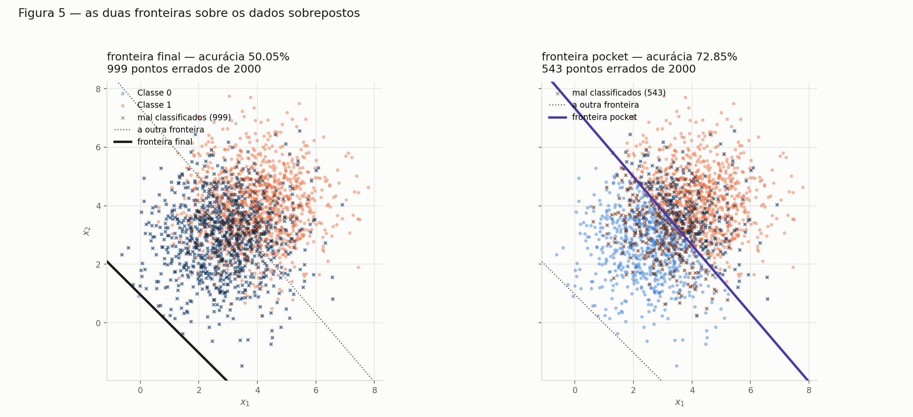
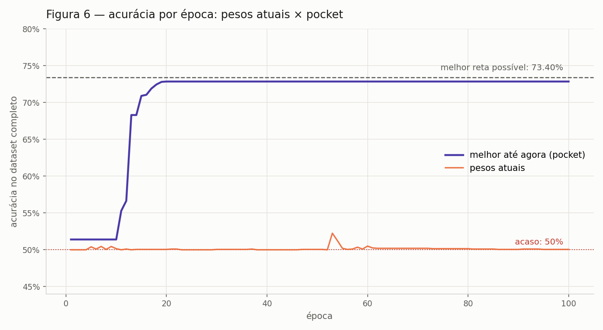
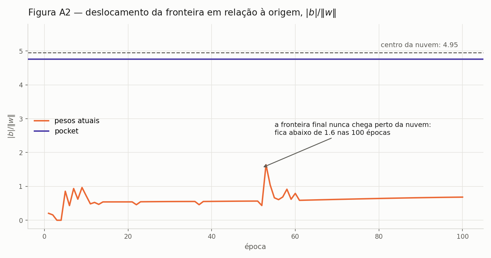

Perceptron¶
Implementação e estudo do perceptron: primeiro no caso para o qual ele foi projetado — dados linearmente separáveis — e depois no que acontece quando essa hipótese deixa de valer.
Todo o código está em code/ e roda com semente fixa (SEED = 42); as figuras
em figures/ são exatamente as que os scripts produzem.
Como reproduzir
pip install -r requirements.txt
cd docs/exercises/perceptron/code
python3 ex1_dados.py # A: dados + Figura 1
python3 perceptron.py # B: implementação + treino no dataset separável
python3 ex1c_treino.py # C: Figuras 2, 3 e A1
python3 ex1d_taxa.py # D: análise da taxa de aprendizado
python3 ex2_dados.py # Ex. 2 A: dados sobrepostos + Figura 4
python3 pocket.py # Ex. 2 B: treino com pocket
python3 ex2c_figuras.py # Ex. 2 C: Figuras 5 e 6
python3 ex2d_analise.py # Ex. 2 D: análise + Figura A2
Exercício 1¶
Dados separáveis: o caso para o qual o perceptron foi projetado.
A — Gere os dados¶
Duas classes 2D, 1000 amostras cada, de normais multivariadas com a mesma covariância isotrópica:
| Classe | Média | Covariância |
|---|---|---|
| 0 | [1.5, 1.5] | [[0.5, 0], [0, 0.5]] |
| 1 | [5, 5] | [[0.5, 0], [0, 0.5]] |
Geradas com rng.multivariate_normal(mu, cov, size=1000) — covariância
diagonal e isotrópica (σ = √0.5 ≈ 0.707 em cada eixo, sem correlação), o que dá
duas nuvens circulares de mesmo tamanho.
Conferência amostral¶
| Classe | μ amostral | μ teórico | Covariância amostral |
|---|---|---|---|
| 0 | (1.450, 1.473) | (1.5, 1.5) | [[0.491, 0.029], [0.029, 0.513]] |
| 1 | (5.010, 5.013) | (5, 5) | [[0.495, 0.010], [0.010, 0.499]] |
As covariâncias amostrais reproduzem a diagonal 0.5 com termos cruzados próximos de zero, como esperado.

Figura 1 — os 2000 pontos, uma cor por classe, com a média de cada nuvem marcada com ×.
Por que estas nuvens são linearmente separáveis¶
A distância entre as médias é ‖μ₁ − μ₀‖ = √(3.5² + 3.5²) = 4.950, enquanto o
desvio de cada nuvem é 0.707 por eixo. A razão entre as duas grandezas é
4.950 / (2 × 0.707) = 3.500: cada nuvem precisaria se esticar por 3.5
desvios para alcançar a outra, e uma gaussiana praticamente não vai tão longe.
Isso é o argumento das distribuições. Para a amostra concreta, verifiquei a
separabilidade diretamente — projetei os 2000 pontos na direção μ₁ − μ₀ e
comparei os extremos:
classe 0 vai até 4.577
classe 1 começa em 4.962
folga entre as nuvens: +0.386 → existe reta que separa os 2000 pontos
A folga é positiva, então qualquer reta perpendicular a μ₁ − μ₀ cortando
essa faixa classifica as 2000 amostras sem um único erro. Essa é a condição
que o teorema da convergência do perceptron exige: com margem estritamente
positiva, o algoritmo termina em um número finito de atualizações.
B — Implemente o perceptron¶
A implementação está em code/perceptron.py, num módulo próprio porque o
Exercício 2 a reutiliza sem alteração. É uma classe com treinar, predizer e
acuracia, sem nada específico deste dataset.
| Componente | Implementação |
|---|---|
| Predição | ŷ = degrau(w · x + b), com degrau(z) = 1 se z ≥ 0, senão 0 |
| Atualização (por amostra) | w ← w + η(y − ŷ)x e b ← b + η(y − ŷ) |
| Inicialização | w ~ rng.normal(0, 0.01, size=2), b = 0 |
| Taxa de aprendizado | η = 0.01 |
| Parada | época sem nenhuma atualização, ou 100 épocas |
O erro (y − ŷ) assume três valores: 0 quando a predição está correta — e
aí nada é atualizado, o que é a economia central do algoritmo —, +1 quando
a amostra era da classe 1 e foi prevista como 0, e −1 no engano oposto. Os
dois sinais empurram o vetor w em direções contrárias, que é o que permite
corrigir os dois tipos de erro.
Por que não w ← w + η y x?
Porque essa forma pertence à convenção de rótulos −1 / +1, onde o
próprio y carrega o sinal da correção. Com os rótulos 0 / 1 usados
aqui, y = 0 anularia a atualização inteira: o perceptron nunca aprenderia
com uma amostra da classe 0 e, em particular, jamais corrigiria um falso
positivo — um ponto da classe 0 previsto como 1 continuaria errado para
sempre, porque a única atualização possível empurraria w sempre no mesmo
sentido. Usando (y − ŷ), o sinal vem da direção do engano, não do
rótulo, e a regra funciona nas duas convenções.
Resultado no dataset separável¶
w inicial : [ 0.00305 -0.0104 ] b inicial: 0.0
convergiu : True em 28 épocas (parada: época sem atualizações)
w final : [0.05304 0.02462] b final: -0.26000
acurácia final no dataset completo: 1.0000
Acurácia registrada ao fim de cada época (log completo na saída do script):
| Época | Atualizações | Acurácia | Época | Atualizações | Acurácia | |
|---|---|---|---|---|---|---|
| 1 | 2 | 0.5000 | 18 | 3 | 0.9405 | |
| 2 | 3 | 0.5025 | 21 | 3 | 0.9635 | |
| 5 | 4 | 0.5410 | 24 | 3 | 0.9700 | |
| 9 | 4 | 0.8485 | 26 | 3 | 0.9485 | |
| 12 | 2 | 0.6530 | 27 | 1 | 1.0000 | |
| 16 | 3 | 0.7260 | 28 | 0 | 1.0000 |
Três leituras do treino:
- Convergiu, como o teorema garante. O item A mostrou margem positiva (folga +0.386), então a parada por "época sem atualizações" tinha que acontecer em tempo finito — e aconteceu na época 28, bem antes do teto de 100. A acurácia final é 100%: nenhum dos 2000 pontos fica do lado errado.
- O algoritmo é quase todo silêncio. Foram 78 atualizações em 56 000
amostras processadas (0.14%). Todo o resto foram acertos, que por construção
não mexem em
w— o perceptron só gasta trabalho onde erra. - A acurácia sobe aos trancos, não em rampa. Ela oscila entre 0.50 e 0.97 ao longo do caminho porque este dataset está ordenado por classe: cada época percorre 1000 pontos da classe 0 e depois 1000 da classe 1, e a medição acontece logo após o bloco da classe 1, com a fronteira recém-empurrada para aquele lado. O que importa para a parada não é essa curva, e sim a contagem de atualizações, que é monótona no sentido certo.
Sobre esse último ponto, a classe aceita embaralhar=True para sortear a ordem
a cada época. Mantive False como padrão, que é a leitura literal do
enunciado ("uma passagem completa pelo dataset"), mas a comparação é
instrutiva:
| Ordem das amostras | Épocas até convergir | Atualizações | Acurácia final |
|---|---|---|---|
| Na ordem do dataset (padrão) | 28 | 78 | 1.0000 |
| Embaralhada a cada época | 3 | 83 | 1.0000 |
O custo real — o número de correções — é praticamente o mesmo (78 contra 83). O que muda é quantas passagens são necessárias para gastá-las: com os dados ordenados, cada época aplica só 2 ou 3 correções e desperdiça o resto da varredura, enquanto embaralhando elas se distribuem e o algoritmo termina em três passagens.
Por fim, uma verificação geométrica: o w final faz 20.1° com a direção
μ₁ − μ₀. Não é paralelo a ela — o perceptron não busca a direção que liga as
médias, nem a margem máxima; ele para na primeira fronteira que não erra, e
essa depende de quais pontos por acaso geraram as últimas correções.
C — Treine e meça¶
w final : [0.05304, 0.02462]
b final : -0.26000
épocas : 28 (parada por época sem atualizações, teto era 100)
acurácia : 1.0000 → 0 erros em 2000 pontos

Figura 2 — a fronteira w · x + b = 0 sobre os 2000 pontos, com o
semiplano de cada decisão sombreado ao fundo. Os pontos mal classificados
seriam marcados com um círculo vermelho; a contagem é zero, então a
marcação não aparece — a legenda registra o número para deixar isso explícito
em vez de silencioso.

Figura 3 — acurácia no dataset completo ao fim de cada época. A subida é irregular, com quedas de até 20 pontos percentuais entre épocas consecutivas, e o motivo está no item D.1.
D — Análise¶
D.1 — Por que dados separáveis convergem rápido?¶
Porque a regra de atualização só dispara em erro, e num dataset separável o número total de erros possíveis é finito e pequeno — governado pela geometria das nuvens, não pelo tamanho do dataset.
Quando a predição está certa, (y − ŷ) = 0 e a atualização é literalmente
w ← w + 0: a amostra passa sem custo. Só os enganos movem o vetor, e cada
engano move w exatamente na direção que corrige aquele ponto (soma +ηx se a
classe 1 foi perdida, −ηx se a classe 0 foi invadida). Com margem positiva
existe um w* que acerta tudo, e o teorema da convergência limita o total de
atualizações por (R/γ)², onde R é a maior norma de amostra e γ a margem.
Neste dataset, R = 9.17 e γ ≥ 0.193, o que dá um teto de ≈ 2 260
atualizações — e o treino gastou 78. O limite não depende de haver 2000
ou 2 milhões de pontos: depende de quão separadas as nuvens estão.
O que acontece com as atualizações por época? Elas secam — e o momento em que chegam a zero é o critério de parada.

Figura A1 — atualizações por época no treino do item C.
Aqui vale uma ressalva honesta sobre a forma dessa curva. No treino padrão a
contagem não cai em rampa: fica em 2–4 por época durante 26 épocas e só
então despenca para 1 e 0. Isso é efeito da ordem do dataset, que está
agrupado por classe. Cada época percorre 1000 pontos da classe 0 e depois 1000
da classe 1, e basta um ou dois erros em cada bloco para que w seja
reajustado e o resto do bloco passe limpo. O saldo líquido de cada época é um
empurrão de cerca de −0.01 no viés b, que caminha de 0 até −0.26 — quando
b finalmente coloca a reta dentro do vão entre as nuvens, os erros cessam de
uma vez. É também o que explica a Figura 3: a acurácia é medida logo após o
bloco da classe 1, com a fronteira recém-empurrada para aquele lado.
Embaralhando as amostras a cada época, o mesmo mecanismo aparece na forma clássica, decrescente:
| Ordem | Atualizações por época |
|---|---|
| Ordem do dataset | 2, 3, 4, 3, 4, 3, 4, 3, 4, 2, 4, 2, 3, 3, 3, 3, 3, 3, 2, 3, 3, 2, 3, 3, 2, 3, 1, 0 |
| Embaralhada | 68, 15, 0 |
Com as classes misturadas, a primeira passagem já corrige 68 pontos, a segunda só 15, a terceira nenhum. É a mesma afirmação nos dois casos — a fronteira melhora, os erros ficam mais raros, as atualizações desaparecem —, mas a ordem dos dados decide se isso acontece em 3 passagens ou em 28.
D.2 — O mesmo treino com η = 1.0¶
| η = 0.01 | η = 1.0 | |
|---|---|---|
| Épocas até convergir | 28 | 33 |
| Acurácia final | 1.0000 | 1.0000 |
w final |
[0.05304, 0.02462] | [4.96351, 3.76682] |
b final |
−0.26000 | −29.00000 |
‖w‖ |
0.0585 | 6.2310 |
Direção w/‖w‖ |
[0.90708, 0.42096] | [0.79658, 0.60453] |
| Atualizações | 78 | 91 |
As duas chegam a 100%, como o enunciado antecipa, mas por fronteiras
diferentes: as direções de w estão a 12.30° uma da outra. (Nos 2000
pontos do treino as predições coincidem — as retas só divergem fora da nuvem,
no espaço onde não há dado para discordar.)
O que η controla, então? O tamanho do passo em relação ao que já existe
em w. Cada correção soma ηx, com ‖x‖ da ordem de 7 neste dataset:
- Com η = 0.01, cada passo tem magnitude ~0.07 contra um
winicial de magnitude ~0.01. Já a primeira correção domina o vetor inicial, e daí em diantewcresce devagar: as 78 correções o levam a‖w‖ = 0.058. - Com η = 1.0, cada passo tem magnitude ~7 — cem vezes maior. O
wfinal tem norma 6.23, 106 vezes a do outro.
Duas consequências. Primeira: a norma de w não muda a classificação, já
que o sinal de w·x + b é invariante a multiplicar tudo por uma constante
positiva; nesse sentido η é inofensivo. Segunda, e é a que importa: η muda
quanto cada engano individual pesa contra a memória acumulada. Com passo
grande, um único ponto mal classificado pode girar a fronteira inteira; com
passo pequeno, ele só a desloca um pouco, e a direção final resulta da média de
muitas correções. Por isso as duas execuções param em ângulos diferentes — e
por isso η importa muito mais no Exercício 2, onde os dados não são separáveis
e as correções nunca cessam.
D.3 — Por que não começar de w = 0¶
Suponha w₀ = 0 e b₀ = 0, e duas execuções idênticas em tudo (mesmos dados,
mesma ordem) exceto pela taxa: η₁ e η₂. Afirmo que, em todo instante t,
Prova por indução. Em t = 0 vale trivialmente, porque 0 = c · 0 para
qualquer c. Suponha que vale em t. A predição na
amostra seguinte depende apenas do sinal de w·x + b, e
com c > 0 — multiplicar por uma constante positiva não muda sinal, logo
as duas execuções produzem o mesmo ŷ, portanto o mesmo erro (y − ŷ), e
portanto atualizam ou não atualizam juntas. Quando atualizam:
w₂(t+1) = w₂(t) + η₂(y−ŷ)x
= c·w₁(t) + c·η₁(y−ŷ)x (hipótese de indução, e η₂ = c·η₁)
= c·( w₁(t) + η₁(y−ŷ)x )
= c·w₁(t+1)
e o mesmo para b. A relação se preserva, o que fecha a indução. ∎
Consequências. As duas execuções tomam exatamente as mesmas decisões, na
mesma ordem, erram nos mesmos pontos e param na mesma época; a fronteira
{x : w·x + b = 0} é idêntica, porque c·w·x + c·b = 0 define a mesma reta
que w·x + b = 0. Ou seja, partindo do zero, η não tem efeito nenhum — ela
só reescala o vetor final, e a pergunta do item D.2 não faria sentido. É por
isso que o item B pede w ~ rng.normal(0, 0.01): o w inicial é o único
elemento cuja magnitude não é multiplicada por η, e é a existência dele que
faz a razão entre "tamanho do passo" e "tamanho do que já foi aprendido"
significar alguma coisa.
Verifiquei numericamente, rodando o treino a partir de w = 0:
eta = 0.01 -> épocas 37 | acurácia 1.0000 | w = [0.05868, 0.03350] | b = -0.31000
eta = 1.0 -> épocas 37 | acurácia 1.0000 | w = [5.86808, 3.35029] | b = -31.00000
w(eta=1.0) == 100 * w(eta=0.01)? True
b(eta=1.0) == 100 * b(eta=0.01)? True
mesmo número de épocas? True
ângulo entre as direções: 0.0000°
predições idênticas? True
Cem vezes a taxa, cem vezes os pesos, zero grau de diferença na fronteira e
o mesmo número de épocas — exatamente o que a álgebra prevê. Compare com o item
D.2, onde a mesma mudança de η, partindo de um w aleatório, deu 12.30° de
diferença e cinco épocas a mais.
Código do Exercício 1¶
code/ex1c_treino.py — treino e Figuras 2, 3 e A1
"""
Exercicio 1 - Parte C: treine e meca.
Treina o perceptron no dataset separavel e produz:
Figura 2 - fronteira de decisao w.x + b = 0 sobre os pontos, com os pontos
mal classificados marcados de forma distinta;
Figura 3 - acuracia x epoca.
"""
import numpy as np
import matplotlib.pyplot as plt
from _saida import figura
from ex1_dados import gerar_dados, CORES, SURFACE, TINTA, TINTA_2, estilo, MU
from perceptron import Perceptron
def figura_2(p, X, y, caminho=None):
"""Fronteira de decisao sobre a nuvem de pontos."""
caminho = caminho or figura("fig02_fronteira.png")
errados = p.predizer(X) != y
fig, ax = plt.subplots(figsize=(8.5, 7), dpi=150)
fig.patch.set_facecolor(SURFACE)
estilo(ax)
x_min, x_max = X[:, 0].min() - 0.6, X[:, 0].max() + 0.6
y_min, y_max = X[:, 1].min() - 0.6, X[:, 1].max() + 0.6
# regioes de decisao, para deixar visivel de que lado o modelo diz 0 e 1
gx, gy = np.meshgrid(np.linspace(x_min, x_max, 400),
np.linspace(y_min, y_max, 400))
Z = p.predizer(np.column_stack([gx.ravel(), gy.ravel()])).reshape(gx.shape)
ax.contourf(gx, gy, Z, levels=[-0.5, 0.5, 1.5],
colors=[CORES[0], CORES[1]], alpha=0.08, zorder=1)
for c in (0, 1):
pts = X[y == c]
ax.scatter(pts[:, 0], pts[:, 1], s=15, c=CORES[c], alpha=0.5,
linewidths=0.3, edgecolors=SURFACE, label=f"Classe {c}",
zorder=2)
xs, ys = p.reta_de_decisao(x_min, x_max)
ax.plot(xs, ys, color=TINTA, linewidth=2, zorder=4,
label="fronteira $w \\cdot x + b = 0$")
# marcacao distinta dos erros (fica vazia quando a acuracia e 100%)
ax.scatter(X[errados, 0], X[errados, 1], s=110, facecolors="none",
edgecolors="#c0392b", linewidths=1.8, zorder=5,
label=f"mal classificados ({int(errados.sum())})")
ax.set_title("Figura 2 — fronteira de decisão aprendida\n"
f"acurácia {p.acuracia(X, y):.2%} · "
f"{int(errados.sum())} pontos mal classificados de {len(X)}",
fontsize=12.5, color=TINTA, loc="left", pad=12)
ax.set_xlabel("$x_1$", color=TINTA_2)
ax.set_ylabel("$x_2$", color=TINTA_2)
ax.set_xlim(x_min, x_max)
ax.set_ylim(y_min, y_max)
ax.set_aspect("equal")
ax.legend(frameon=False, fontsize=9.5, loc="upper left")
fig.tight_layout()
fig.savefig(caminho, facecolor=SURFACE)
print(f"Figura salva em: {caminho}")
def figura_3(p, caminho=None):
"""Acuracia no dataset completo ao fim de cada epoca."""
caminho = caminho or figura("fig03_acuracia.png")
ep = [h["epoca"] for h in p.historico_]
acc = [h["acuracia"] for h in p.historico_]
fig, ax = plt.subplots(figsize=(9, 5), dpi=150)
fig.patch.set_facecolor(SURFACE)
estilo(ax)
ax.plot(ep, acc, color=CORES[0], linewidth=2, zorder=3)
ax.scatter(ep, acc, s=34, color=CORES[0], edgecolors=SURFACE,
linewidths=1.5, zorder=4)
ax.axhline(1.0, color=TINTA_2, linewidth=1, linestyle=":", zorder=2)
ax.annotate(f"convergiu na época {p.epocas_}\n(acurácia {acc[-1]:.2%})",
(ep[-1], acc[-1]), textcoords="offset points", xytext=(-30, -190),
ha="right", fontsize=10, color=TINTA,
arrowprops=dict(arrowstyle="->", color=TINTA_2, lw=1.2))
ax.set_title("Figura 3 — acurácia no dataset completo × época",
fontsize=12.5, color=TINTA, loc="left", pad=12)
ax.set_xlabel("época", color=TINTA_2)
ax.set_ylabel("acurácia", color=TINTA_2)
ax.set_ylim(0.45, 1.06)
ax.yaxis.set_major_formatter(lambda v, _: f"{v:.0%}")
fig.tight_layout()
fig.savefig(caminho, facecolor=SURFACE)
print(f"Figura salva em: {caminho}")
def figura_a1(p, caminho=None):
"""Suplementar: atualizacoes por epoca - o que de fato governa a parada."""
caminho = caminho or figura("figA1_atualizacoes.png")
ep = [h["epoca"] for h in p.historico_]
upd = [h["atualizacoes"] for h in p.historico_]
fig, ax = plt.subplots(figsize=(9, 4.4), dpi=150)
fig.patch.set_facecolor(SURFACE)
estilo(ax)
ax.bar(ep, upd, color=CORES[1], alpha=0.85, zorder=2, width=0.7)
ax.annotate("época sem nenhuma\natualização → parada",
(ep[-1], 0), textcoords="offset points", xytext=(-8, 40),
ha="right", fontsize=9.5, color=TINTA,
arrowprops=dict(arrowstyle="->", color=TINTA_2, lw=1.2))
ax.set_title("Figura A1 — atualizações por época "
f"({sum(upd)} no total, em {p.epocas_ * 2000} amostras vistas)",
fontsize=12, color=TINTA, loc="left", pad=12)
ax.set_xlabel("época", color=TINTA_2)
ax.set_ylabel("atualizações", color=TINTA_2)
fig.tight_layout()
fig.savefig(caminho, facecolor=SURFACE)
print(f"Figura salva em: {caminho}")
if __name__ == "__main__":
X, y = gerar_dados()
p = Perceptron(eta=0.01, max_epocas=100, seed=42).treinar(X, y)
print("=== C.1 — resultado do treino ===")
print(f" w final : [{p.w_[0]:.5f}, {p.w_[1]:.5f}]")
print(f" b final : {p.b_:.5f}")
print(f" épocas : {p.epocas_} "
f"({'convergiu' if p.convergiu_ else 'parou no teto'})")
print(f" acurácia : {p.acuracia(X, y):.4f}")
print(f" erros : {int((p.predizer(X) != y).sum())} de {len(X)}")
print(f" atualizações totais: {sum(h['atualizacoes'] for h in p.historico_)}")
figura_2(p, X, y)
figura_3(p)
figura_a1(p)
code/ex1d_taxa.py — análise da taxa de aprendizado (D.2 e D.3)
"""
Exercicio 1 - Parte D: analise da taxa de aprendizado.
D.2 - re-executa o treino com eta = 1.0 e compara com eta = 0.01: epocas,
acuracia e a DIRECAO de w (w/||w||).
D.3 - demonstracao empirica do argumento algebrico: partindo de w = 0 e b = 0,
treinar com eta_1 e eta_2 produz pesos que diferem apenas pelo fator
eta_2/eta_1 - mesma fronteira, mesmo numero de epocas.
"""
import numpy as np
from ex1_dados import gerar_dados
from perceptron import Perceptron
def direcao(w):
return w / np.linalg.norm(w)
def angulo(w1, w2):
c = np.clip(direcao(w1) @ direcao(w2), -1, 1)
return float(np.degrees(np.arccos(c)))
class PerceptronDoZero(Perceptron):
"""So para o item D.3: identica, mas comecando de w = 0 e b = 0."""
def treinar(self, X, y):
guardado = np.random.default_rng
try:
# substitui o sorteio da inicializacao por zeros, sem tocar no resto
np.random.default_rng = lambda seed=None: _RngZero(guardado(seed))
return super().treinar(X, y)
finally:
np.random.default_rng = guardado
class _RngZero:
"""Embrulho do gerador: normal() devolve zeros; o resto passa direto."""
def __init__(self, rng):
self._rng = rng
def normal(self, *a, size=None, **k):
return np.zeros(size)
def __getattr__(self, nome):
return getattr(self._rng, nome)
if __name__ == "__main__":
X, y = gerar_dados()
print("=== D.2 — mesma inicialização, taxas diferentes ===")
modelos = {}
for eta in (0.01, 1.0):
p = Perceptron(eta=eta, max_epocas=100, seed=42).treinar(X, y)
modelos[eta] = p
print(f"\n eta = {eta}")
print(f" épocas : {p.epocas_} ({'convergiu' if p.convergiu_ else 'teto'})")
print(f" acurácia : {p.acuracia(X, y):.4f}")
print(f" w final : [{p.w_[0]:.5f}, {p.w_[1]:.5f}] b: {p.b_:.5f}")
print(f" ||w|| : {np.linalg.norm(p.w_):.5f}")
print(f" direção : [{direcao(p.w_)[0]:.5f}, {direcao(p.w_)[1]:.5f}]")
print(f" atualizações: {sum(h['atualizacoes'] for h in p.historico_)}")
a, b = modelos[0.01], modelos[1.0]
print(f"\n ângulo entre as duas direções de w: {angulo(a.w_, b.w_):.2f}°")
print(f" razão entre as normas ||w(1.0)|| / ||w(0.01)||: "
f"{np.linalg.norm(b.w_) / np.linalg.norm(a.w_):.1f}")
print(f" predições idênticas nos 2000 pontos? "
f"{np.array_equal(a.predizer(X), b.predizer(X))}")
print("\n=== D.3 — partindo de w = 0, b = 0 (o que o item B proíbe) ===")
zeros = {}
for eta in (0.01, 1.0):
p = PerceptronDoZero(eta=eta, max_epocas=100, seed=42).treinar(X, y)
zeros[eta] = p
print(f" eta = {eta:<5} -> épocas {p.epocas_:>3} | "
f"acurácia {p.acuracia(X, y):.4f} | "
f"w = [{p.w_[0]:.5f}, {p.w_[1]:.5f}] | b = {p.b_:.5f}")
z1, z2 = zeros[0.01], zeros[1.0]
fator = 1.0 / 0.01
print(f"\n w(eta=1.0) == (1.0/0.01) * w(eta=0.01)? "
f"{np.allclose(z2.w_, fator * z1.w_)}")
print(f" b(eta=1.0) == (1.0/0.01) * b(eta=0.01)? "
f"{np.isclose(z2.b_, fator * z1.b_)}")
print(f" mesmo número de épocas? {z1.epocas_ == z2.epocas_}")
print(f" ângulo entre as direções: {angulo(z1.w_, z2.w_):.4f}°")
print(f" predições idênticas? {np.array_equal(z1.predizer(X), z2.predizer(X))}")
code/perceptron.py — a implementação do perceptron (reutilizada no Exercício 2)
"""
Perceptron de camada unica, escrito do zero.
Esta implementacao e reutilizada no Exercicio 2 - por isso mora num modulo
proprio e nao depende de nada especifico do dataset separavel.
Convencao de rotulos: y in {0, 1}.
predicao: y_hat = degrau(w . x + b), degrau(z) = 1 se z >= 0, senao 0
atualizacao: w <- w + eta (y - y_hat) x
b <- b + eta (y - y_hat)
O erro (y - y_hat) vale 0 quando acerta (nao atualiza), +1 quando deixou de
prever a classe 1 e -1 quando previu 1 indevidamente. Escrever a regra como
w <- w + eta*y*x so vale na convencao de rotulos -1/+1: com rotulos 0/1 ela
nunca atualizaria na classe 0 e o falso positivo jamais seria corrigido.
"""
import numpy as np
def degrau(z):
"""Funcao de ativacao: 1 se z >= 0, 0 caso contrario."""
return (z >= 0).astype(int)
class Perceptron:
"""Perceptron de camada unica treinado pela regra classica, amostra a amostra.
Parametros
----------
eta : taxa de aprendizado.
max_epocas : teto de passagens pelo dataset.
seed : semente do sorteio de w.
embaralhar : se True, sorteia a ordem das amostras a cada epoca.
"""
def __init__(self, eta=0.01, max_epocas=100, seed=42, embaralhar=False):
self.eta = eta
self.max_epocas = max_epocas
self.seed = seed
self.embaralhar = embaralhar
# ---------------------------------------------------------------- predicao
def ativacao(self, X):
"""Pre-ativacao w . x + b (o score bruto, antes do degrau)."""
return X @ self.w_ + self.b_
def predizer(self, X):
return degrau(self.ativacao(X))
def acuracia(self, X, y):
return float((self.predizer(X) == y).mean())
# ---------------------------------------------------------------- treino
def treinar(self, X, y):
"""Treina ate uma epoca sem nenhuma atualizacao, ou ate max_epocas.
Guarda em self.historico_, por epoca: numero de atualizacoes, acuracia
no dataset COMPLETO ao fim da epoca, e os pesos naquele momento.
"""
rng = np.random.default_rng(self.seed)
# inicializacao pedida: w pequeno e aleatorio, b = 0.
# comecar de w = 0 tornaria eta irrelevante (ela so reescalaria w,
# deixando fronteira e numero de epocas identicos).
self.w_ = rng.normal(0, 0.01, size=X.shape[1])
self.b_ = 0.0
self.w_inicial_ = self.w_.copy()
self.historico_ = []
self.convergiu_ = False
for epoca in range(1, self.max_epocas + 1):
ordem = rng.permutation(len(X)) if self.embaralhar else np.arange(len(X))
atualizacoes = 0
for i in ordem:
xi, yi = X[i], y[i]
y_hat = 1 if (xi @ self.w_ + self.b_) >= 0 else 0
erro = yi - y_hat
if erro: # acerto => erro 0 => nao mexe nos pesos
self.w_ += self.eta * erro * xi
self.b_ += self.eta * erro
atualizacoes += 1
self.historico_.append({
"epoca": epoca,
"atualizacoes": atualizacoes,
"acuracia": self.acuracia(X, y),
"w": self.w_.copy(),
"b": self.b_,
})
if atualizacoes == 0: # passagem inteira sem erro: parou
self.convergiu_ = True
break
self.epocas_ = len(self.historico_)
return self
# ---------------------------------------------------------------- utilidades
def reta_de_decisao(self, x_min, x_max):
"""Pontos (x1, x2) da fronteira w1*x1 + w2*x2 + b = 0, para plotar."""
w1, w2 = self.w_
xs = np.array([x_min, x_max])
if abs(w2) < 1e-12: # fronteira vertical
x = -self.b_ / w1
return np.array([x, x]), np.array([x_min, x_max])
return xs, -(w1 * xs + self.b_) / w2
if __name__ == "__main__":
from ex1_dados import gerar_dados
X, y = gerar_dados()
p = Perceptron(eta=0.01, max_epocas=100, seed=42).treinar(X, y)
print(f"w inicial : {np.array2string(p.w_inicial_, precision=5)} | b inicial: 0.0")
print(f"convergiu : {p.convergiu_} em {p.epocas_} épocas "
f"(parada: {'época sem atualizações' if p.convergiu_ else 'teto de épocas'})")
print(f"w final : {np.array2string(p.w_, precision=5)}")
print(f"b final : {p.b_:.5f}")
print(f"acurácia final no dataset completo: {p.acuracia(X, y):.4f}")
print("\n época | atualizações | acurácia")
for h in p.historico_:
print(f" {h['epoca']:>4} | {h['atualizacoes']:>12} | {h['acuracia']:.4f}")
total = sum(h["atualizacoes"] for h in p.historico_)
print(f"\ntotal de atualizações: {total} "
f"(de {p.epocas_ * len(X)} amostras vistas)")
code/ex1_dados.py — geração dos dados e Figura 1
"""
Exercicio 1 - Parte A: dados linearmente separaveis.
Duas classes 2D, 1000 amostras cada, de normais multivariadas com a mesma
covariancia isotropica e medias bem afastadas - o caso para o qual o perceptron
foi projetado.
"""
import numpy as np
import pandas as pd
import matplotlib.pyplot as plt
from _saida import figura, dado
SEED = 42
N_POR_CLASSE = 1000
MU = {
0: np.array([1.5, 1.5]),
1: np.array([5.0, 5.0]),
}
COV = {
0: np.array([[0.5, 0.0], [0.0, 0.5]]),
1: np.array([[0.5, 0.0], [0.0, 0.5]]),
}
CORES = {0: "#2a78d6", 1: "#eb6834"}
SURFACE, TINTA, TINTA_2 = "#fcfcfb", "#1a1a19", "#5c5b55"
def gerar_dados(seed=SEED, n=N_POR_CLASSE):
"""Retorna X (2000, 2) e y (2000,) com rotulos 0/1."""
rng = np.random.default_rng(seed)
Xs, ys = [], []
for c in (0, 1):
Xs.append(rng.multivariate_normal(MU[c], COV[c], size=n))
ys.append(np.full(n, c))
return np.vstack(Xs), np.concatenate(ys)
def estilo(ax):
ax.set_facecolor(SURFACE)
ax.grid(True, color="#e6e5e0", linewidth=0.8, zorder=0)
ax.set_axisbelow(True)
for lado in ("top", "right"):
ax.spines[lado].set_visible(False)
for lado in ("left", "bottom"):
ax.spines[lado].set_color("#d5d4ce")
ax.tick_params(colors=TINTA_2, labelsize=9)
def figura_1(X, y, caminho=None):
caminho = caminho or figura("fig01_dados.png")
fig, ax = plt.subplots(figsize=(8, 6.5), dpi=150)
fig.patch.set_facecolor(SURFACE)
estilo(ax)
for c in (0, 1):
pts = X[y == c]
ax.scatter(pts[:, 0], pts[:, 1], s=16, c=CORES[c], alpha=0.55,
linewidths=0.3, edgecolors=SURFACE, label=f"Classe {c}",
zorder=2)
for c in (0, 1):
# media teorica de cada nuvem
ax.scatter(*MU[c], marker="X", s=190, c=CORES[c], edgecolors=SURFACE,
linewidths=2.0, zorder=4)
ax.annotate(f"$\\mu_{c}$ = ({MU[c][0]:g}, {MU[c][1]:g})", MU[c],
textcoords="offset points", xytext=(12, 10), fontsize=9.5,
color=TINTA, zorder=5,
bbox=dict(boxstyle="round,pad=0.25", fc=SURFACE,
ec=CORES[c], lw=1.0, alpha=0.9))
ax.set_title("Figura 1 — duas classes linearmente separáveis "
"(1000 amostras cada)",
fontsize=12.5, color=TINTA, loc="left", pad=12)
ax.set_xlabel("$x_1$", color=TINTA_2)
ax.set_ylabel("$x_2$", color=TINTA_2)
ax.set_aspect("equal")
ax.legend(title="X = média da classe", frameon=False, fontsize=10,
title_fontsize=9.5, loc="upper left")
fig.tight_layout()
fig.savefig(caminho, facecolor=SURFACE)
print(f"Figura salva em: {caminho}")
def margem_na_direcao_das_medias(X, y):
"""Projeta os pontos na direcao que liga as medias e mede a folga entre as
duas classes. Folga > 0 => existe reta perpendicular a essa direcao que
separa tudo (condicao suficiente para separabilidade linear)."""
w = MU[1] - MU[0]
p = X @ w / np.linalg.norm(w)
return p[y == 1].min() - p[y == 0].max(), p
if __name__ == "__main__":
X, y = gerar_dados()
pd.DataFrame(X, columns=["x1", "x2"]).assign(classe=y) \
.to_csv(dado("dados_separaveis.csv"), index=False)
print(f"X: {X.shape} | y: {y.shape} | por classe: {np.bincount(y)}")
for c in (0, 1):
Xc = X[y == c]
print(f"\n--- Classe {c} ---")
print(" media amostral :", np.array2string(Xc.mean(axis=0), precision=3))
print(" media teorica :", np.array2string(MU[c], precision=3))
print(" cov amostral :",
np.array2string(np.cov(Xc, rowvar=False), precision=3).replace("\n", "\n" + " " * 19))
d = np.linalg.norm(MU[1] - MU[0])
sigma = np.sqrt(0.5)
print(f"\ndistancia entre as medias: {d:.3f}")
print(f"desvio por eixo: {sigma:.3f} -> razao de separacao "
f"d / (2*sigma) = {d / (2 * sigma):.3f}")
folga, p = margem_na_direcao_das_medias(X, y)
print(f"\nprojecao na direcao mu1 - mu0:")
print(f" classe 0 vai ate {p[y == 0].max():.3f} | "
f"classe 1 comeca em {p[y == 1].min():.3f}")
print(f" folga entre as duas nuvens: {folga:+.3f} -> "
f"{'SEPARAVEL por essa reta' if folga > 0 else 'ha sobreposicao nessa direcao'}")
figura_1(X, y)
code/_saida.py — caminhos de figures/ e data/
"""
Caminhos compartilhados pelos scripts deste exercicio.
Os scripts moram em code/, mas escrevem em figures/ (o que o relatorio exibe)
e em data/ (entradas do Kaggle e saidas geradas). Assim rodar
`python3 ex1_nuvens.py` de dentro de code/ ja deixa cada arquivo no lugar certo.
"""
from pathlib import Path
BASE = Path(__file__).resolve().parent.parent # docs/exercises/data
FIGURAS = BASE / "figures"
DADOS = BASE / "data"
def figura(nome):
"""Caminho de uma figura, criando figures/ se preciso."""
FIGURAS.mkdir(exist_ok=True)
return FIGURAS / nome
def dado(nome):
"""Caminho de um arquivo de dados (entrada ou saida)."""
DADOS.mkdir(exist_ok=True)
return DADOS / nome
Exercício 2¶
Dados sobrepostos: o caso que o perceptron não resolve.
A — Gere os dados¶
Mesmo formato do Exercício 1 — 1000 amostras por classe, normais multivariadas isotrópicas — mas com as médias três vezes mais próximas e o espalhamento três vezes maior:
| Classe | Média | Covariância |
|---|---|---|
| 0 | [3, 3] | [[1.5, 0], [0, 1.5]] |
| 1 | [4, 4] | [[1.5, 0], [0, 1.5]] |
| Classe | μ amostral | Desvio amostral |
|---|---|---|
| 0 | (2.913, 2.952) | (1.214, 1.241) |
| 1 | (4.018, 4.022) | (1.218, 1.224) |

Figura 4 — os 2000 pontos, uma cor por classe. As duas nuvens ocupam praticamente a mesma região.
Quanto mudou em relação ao Exercício 1¶
| Exercício 1 | Exercício 2 | |
|---|---|---|
| Distância entre médias | 4.950 | 1.414 |
| Desvio por eixo | 0.707 | 1.225 |
Razão d / 2σ |
3.500 | 0.577 |
| Folga entre as nuvens | +0.386 | −6.491 |
A razão de separação despencou de 3.5 para 0.577 — abaixo de 1, o limiar em que
as nuvens deixam de ter um vale de baixa densidade entre elas. A folga na
direção μ₁ − μ₀ é negativa: projetando os pontos nessa direção, a classe 0
vai até 8.495 enquanto a classe 1 começa em 2.004. Elas se atravessam por quase
6.5 unidades, e nenhuma reta separa os 2000 pontos.
Dois tetos de referência para o resto do exercício:
- 71.81% é o acerto da fronteira ótima teórica. Como as duas gaussianas têm
a mesma covariância isotrópica, a fronteira ótima é a mediatriz entre as
médias, e o acerto é
Φ(d / 2σ) = Φ(0.577). - 73.40% é a melhor reta possível nesta amostra, medida por busca exaustiva (720 direções × todos os cortes de cada uma). Fica um pouco acima do ótimo teórico porque se ajusta ao sorteio concreto.
B — Treine guardando os melhores pesos¶
A implementação do Exercício 1 foi reutilizada sem alteração: perceptron.py
está intacto e o Exercício 1 continua reproduzindo exatamente os mesmos números.
O pocket entra em pocket.py, numa classe que herda de Perceptron e só
reescreve treinar — degrau, predizer, acuracia e reta_de_decisao vêm
da classe mãe. A única ideia nova dentro do laço são três linhas:
if erro:
self.w_ += self.eta * erro * xi
self.b_ += self.eta * erro
acc = self.acuracia(X, y) # <- avalia no dataset completo
if acc > self.melhor_acuracia_: # <- melhorou?
self.melhor_acuracia_ = acc # <- então guarda no bolso
self.w_pocket_, self.b_pocket_ = self.w_.copy(), self.b_
Mesmo η = 0.01, mesmo teto de 100 épocas. O bolso começa com os pesos
iniciais como "melhor até agora", para que exista sempre um candidato válido.
épocas executadas : 100 (nunca houve uma época sem atualização)
atualizações : 384
trocas de bolso : 11
w |
b |
Acurácia | |
|---|---|---|---|
| Pesos finais | [0.04132, 0.04150] | −0.04000 | 50.05% |
| Pesos do pocket | [0.00638, 0.00546] | −0.04000 | 72.85% |
Os dois números ficam a 22.8 pontos percentuais de distância. Os pesos finais acertam 50.05% — o que se obtém chutando — enquanto o pocket chega a 72.85%, a 0.55 ponto do teto de 73.40%. Isso não é bug: é o resultado correto, e o item D explica.
C — Figuras¶

Figura 5 — as duas fronteiras sobre os mesmos pontos, cada painel marcando com × escuro os pontos que aquela fronteira erra (a outra fronteira aparece pontilhada, para comparação). À esquerda, a reta final passa por fora da nuvem, deixando quase tudo de um lado só: 999 erros. À direita, a reta do pocket corta entre as classes: 543 erros.

Figura 6 — acurácia dos pesos atuais e do melhor até agora, época a época. A curva do pocket é monótona por construção, sobe até 72.85% por volta da época 19 e trava ali. A dos pesos atuais fica colada nos 50% durante as 100 épocas inteiras, com picos ocasionais de no máximo 52.25%.
D — Análise¶
D.1 — Por que os pesos finais ficam em 50% e o pocket não¶
O pocket chega a 72.85%, a meio ponto do teto de 73.40%; os finais ficam em 50.05%. A diferença não é sobre qualidade de aprendizado — é sobre qual instante do treino você escolhe olhar.
Como nenhuma reta separa os dados, sempre existe algum ponto mal classificado, então o laço nunca para de atualizar. Os pesos finais não são o resultado de uma convergência: são apenas a fotografia dos pesos logo depois da última correção da centésima época — e uma correção acontece exatamente porque aquele ponto estava errado, ou seja, os pesos finais são sempre "os pesos recém empurrados para acomodar um ponto qualquer". O pocket, ao contrário, é uma escolha deliberada: guarda os pesos no melhor instante já visto, em vez do último.
Onde a fronteira final para, e por quê. Aqui entra a dica do enunciado. Cada engano aplica
Δw = η (y − ŷ) x com ‖x‖ ≈ 5.07 neste dataset → ‖Δw‖ ≈ 0.0507
Δb = η (y − ŷ) com o "1" implícito do viés → |Δb| = 0.0100
O vetor w anda 5 vezes mais rápido que o viés b a cada correção, porque
x tem norma ~5 e o viés multiplica sempre 1. A posição da reta depende das
duas grandezas juntas: a distância da fronteira até a origem é |b| / ‖w‖. Se
‖w‖ cresce cinco vezes mais rápido do que |b|, essa razão encolhe — a
reta é arrastada para perto da origem, enquanto os dados vivem em torno de
(3.5, 3.5), a 4.95 da origem.
‖w‖ |
|b| | |b| / ‖w‖ | |
|---|---|---|---|
| Pesos finais | 0.05856 | 0.04000 | 0.683 |
| Pesos do pocket | 0.00840 | 0.04000 | 4.763 |
| Centro da nuvem (referência) | 4.950 |
O pocket guardou os pesos num instante em que ‖w‖ ainda era pequeno e a razão
valia 4.76 — praticamente em cima da nuvem. Os finais têm ‖w‖ sete vezes maior
e a fronteira a 0.68 da origem: ela corta o plano fora dos dados, e é
exatamente isso que a Figura 5 mostra à esquerda. Com a nuvem inteira de um lado
só, a acurácia cai para a proporção das classes — 50%.

Figura A2 — o deslocamento |b| / ‖w‖ dos pesos atuais ao longo das 100
épocas nunca passa de 1.6, contra os 4.95 onde a nuvem está. O pocket (linha
roxa) ficou parado no único momento em que a fronteira esteve no lugar certo.
D.2 — Figura 3 contra Figura 6: o que o teorema garante¶
No Exercício 1 a curva de acurácia estabiliza em 100% e o treino para sozinho; aqui ela nunca estabiliza — oscila em torno de 50% até a época 100, e o que interrompe o treino é o teto de épocas, não o algoritmo.
O teorema da convergência do perceptron garante o seguinte: se existe um
vetor w* e uma margem γ > 0 tais que todo ponto do conjunto é classificado
corretamente com folga pelo menos γ, então o número de atualizações é finito
e limitado por (R/γ)², com R = maxᵢ‖xᵢ‖. A conclusão é forte — parada em
tempo finito, erro zero — mas é condicional.
A hipótese violada aqui é justamente a da premissa: a separabilidade linear.
Não existe w* que acerte todos os pontos, logo não existe margem γ > 0, logo
(R/γ)² não é um número — o limite "explode" e o teorema simplesmente não diz
nada sobre este caso. Medido no item A: a folga na direção das médias é
−6.491, e a melhor reta possível erra 26.6% dos pontos.
E a consequência é visível nas duas figuras lado a lado:
| Exercício 1 (Figura 3) | Exercício 2 (Figura 6) | |
|---|---|---|
| Margem | +0.386 | −6.491 |
| Atualizações | 78, depois zero | 384, e nunca zero |
| Parada | época sem atualizações (28ª) | teto de 100 épocas |
| Acurácia final | 100% | 50.05% |
D.3 — Mais épocas resolvem? Um η menor resolve?¶
Nenhum dos dois, e a razão está na própria regra de atualização, não em tentativa e erro.
A regra só tem um gatilho: erro = y − ŷ ≠ 0. Num dataset sobreposto, toda
configuração de pesos deixa pelo menos 26.6% dos pontos errados — é o que o teto
de 73.40% significa. Então, para qualquer w e qualquer instante, sempre existe
um ponto que dispara uma atualização. O laço não tem ponto fixo: ele é um
processo que não termina, e cada passagem embaralha os pesos de novo.
Mais épocas só produzem mais correções desse tipo. Medido:
| Épocas | Acurácia final | Acurácia do pocket | Atualizações | |b|/‖w‖ final |
|---|---|---|---|---|
| 100 | 50.05% | 72.85% | 384 | 0.683 |
| 500 | 50.20% | 73.15% | 1 984 | 0.595 |
Cinco vezes mais épocas movem a acurácia final em 0.15 ponto — ruído — e o
deslocamento da fronteira fica pior (0.595 contra 0.683), porque ‖w‖
continuou crescendo. O pocket ganha 0.3 ponto, mas não por aprender: só porque
teve mais sorteios para amostrar uma reta boa.
Um η menor também não, e por um motivo estrutural: η multiplica igualmente
os dois lados da atualização, Δw = η(y−ŷ)x e Δb = η(y−ŷ). A razão entre eles
continua sendo ‖x‖ ≈ 5 seja qual for η — que é exatamente o desequilíbrio que
deixa a fronteira fora da nuvem. Diminuir η encolhe o passo, não o corrige.
| η | Acurácia final | Acurácia do pocket | Atualizações | |b|/‖w‖ final |
|---|---|---|---|---|
| 0.01 | 50.05% | 72.85% | 384 | 0.683 |
| 0.001 | 50.40% | 73.00% | 384 | 0.751 |
| 0.0001 | 50.15% | 71.10% | 459 | 0.796 |
Cem vezes menor, e a acurácia final segue em 50%: a contagem de atualizações nem muda (384 nos dois primeiros casos), porque quem gera os erros é a geometria dos dados, não o tamanho do passo.
O que de fato resolveria é mudar o critério, não o ajuste fino: guardar o melhor (pocket, que já leva a 72.85%), trocar a perda do degrau por uma diferenciável com mínimo bem definido — regressão logística converge para o ótimo em vez de oscilar —, ou aceitar que 73.40% é o teto de qualquer reta e ir para uma fronteira não-linear. Mais épocas e η menor são as duas únicas coisas que comprovadamente não ajudam.
Código do Exercício 2¶
code/ex2_dados.py — dados sobrepostos, Figura 4 e os tetos de referência
"""
Exercicio 2 - Parte A: dados sobrepostos.
Mesmas 1000 amostras por classe, mas agora as medias estao proximas (distancia
sqrt(2)) e o espalhamento e tres vezes maior (variancia 1.5 contra 0.5).
Nenhuma reta separa as duas nuvens.
"""
import numpy as np
import pandas as pd
import matplotlib.pyplot as plt
from _saida import figura, dado
from ex1_dados import CORES, SURFACE, TINTA, TINTA_2, estilo
SEED = 42
N_POR_CLASSE = 1000
MU = {
0: np.array([3.0, 3.0]),
1: np.array([4.0, 4.0]),
}
COV = {
0: np.array([[1.5, 0.0], [0.0, 1.5]]),
1: np.array([[1.5, 0.0], [0.0, 1.5]]),
}
def gerar_dados(seed=SEED, n=N_POR_CLASSE):
rng = np.random.default_rng(seed)
Xs, ys = [], []
for c in (0, 1):
Xs.append(rng.multivariate_normal(MU[c], COV[c], size=n))
ys.append(np.full(n, c))
return np.vstack(Xs), np.concatenate(ys)
def acuracia_otima_teorica():
"""Duas gaussianas de mesma covariancia isotropica: a fronteira otima e a
mediatriz entre as medias, e o acerto e Phi(d / 2*sigma)."""
from math import erf, sqrt
d = np.linalg.norm(MU[1] - MU[0])
sigma = np.sqrt(COV[0][0, 0])
z = d / (2 * sigma)
return 0.5 * (1 + erf(z / sqrt(2))), d, sigma
def melhor_reta(X, y, n_direcoes=720):
"""Teto empirico de qualquer reta: varre direcoes e, para cada uma, o melhor
corte possivel (busca exaustiva sobre os cortes candidatos)."""
melhor = (0.0, None, None)
for ang in np.linspace(0, np.pi, n_direcoes, endpoint=False):
w = np.array([np.cos(ang), np.sin(ang)])
v = X @ w
ordem = np.argsort(v)
vs, ts = v[ordem], y[ordem]
cortes = (vs[:-1] + vs[1:]) / 2
acima = ts.sum() - np.cumsum(ts)[:-1] # positivos acima do corte
abaixo = np.cumsum(1 - ts)[:-1] # negativos abaixo do corte
acc = (acima + abaixo) / len(y)
acc = np.maximum(acc, 1 - acc) # permite inverter o sentido
i = int(np.argmax(acc))
if acc[i] > melhor[0]:
melhor = (float(acc[i]), w, float(cortes[i]))
return melhor
def figura_4(X, y, caminho=None):
caminho = caminho or figura("fig04_dados_sobrepostos.png")
fig, ax = plt.subplots(figsize=(8, 6.5), dpi=150)
fig.patch.set_facecolor(SURFACE)
estilo(ax)
for c in (0, 1):
pts = X[y == c]
ax.scatter(pts[:, 0], pts[:, 1], s=16, c=CORES[c], alpha=0.5,
linewidths=0.3, edgecolors=SURFACE, label=f"Classe {c}",
zorder=2)
for c in (0, 1):
ax.scatter(*MU[c], marker="X", s=190, c=CORES[c], edgecolors=SURFACE,
linewidths=2.0, zorder=4)
ax.annotate(f"$\\mu_{c}$ = ({MU[c][0]:g}, {MU[c][1]:g})", MU[c],
textcoords="offset points",
xytext=(14, 12) if c else (-96, -26), fontsize=9.5,
color=TINTA, zorder=5,
bbox=dict(boxstyle="round,pad=0.25", fc=SURFACE,
ec=CORES[c], lw=1.0, alpha=0.9))
ax.set_title("Figura 4 — duas classes sobrepostas (1000 amostras cada)",
fontsize=12.5, color=TINTA, loc="left", pad=12)
ax.set_xlabel("$x_1$", color=TINTA_2)
ax.set_ylabel("$x_2$", color=TINTA_2)
ax.set_aspect("equal")
ax.legend(title="X = média da classe", frameon=False, fontsize=10,
title_fontsize=9.5, loc="upper left")
fig.tight_layout()
fig.savefig(caminho, facecolor=SURFACE)
print(f"Figura salva em: {caminho}")
if __name__ == "__main__":
X, y = gerar_dados()
pd.DataFrame(X, columns=["x1", "x2"]).assign(classe=y) \
.to_csv(dado("dados_sobrepostos.csv"), index=False)
print(f"X: {X.shape} | por classe: {np.bincount(y)}")
for c in (0, 1):
Xc = X[y == c]
print(f" classe {c}: média amostral "
f"{np.array2string(Xc.mean(axis=0), precision=3)} | "
f"desvio {np.array2string(Xc.std(axis=0, ddof=1), precision=3)}")
otimo, d, sigma = acuracia_otima_teorica()
print(f"\ndistância entre as médias: {d:.4f}")
print(f"desvio por eixo: {sigma:.4f}")
print(f"razão de separação d / (2*sigma) = {d / (2 * sigma):.4f} "
f"(no Exercício 1 era 3.5)")
print(f"acurácia da fronteira ótima (teórica): {otimo:.4f}")
acc, w, corte = melhor_reta(X, y)
print(f"melhor reta possível nesta amostra: {acc:.4f} "
f"(direção [{w[0]:.3f}, {w[1]:.3f}])")
# projecao na direcao das medias: aqui as nuvens se invadem
u = (MU[1] - MU[0]) / np.linalg.norm(MU[1] - MU[0])
p = X @ u
print(f"\nprojeção na direção mu1 - mu0:")
print(f" classe 0 vai até {p[y == 0].max():.3f} | "
f"classe 1 começa em {p[y == 1].min():.3f}")
print(f" folga: {p[y == 1].min() - p[y == 0].max():+.3f} -> "
f"{'separável' if p[y == 1].min() > p[y == 0].max() else 'SOBREPOSTAS'}")
figura_4(X, y)
code/pocket.py — o algoritmo pocket, herdando de Perceptron
"""
Algoritmo pocket.
O enunciado do Exercicio 2 pede para reutilizar a implementacao do Exercicio 1
"sem alteracoes", acrescentando ao laco apenas a copia dos melhores pesos. Por
isso esta classe HERDA de Perceptron: perceptron.py fica intacto (e o Exercicio
1 continua reproduzindo exatamente os mesmos numeros), e aqui so o metodo
treinar e reescrito, com uma unica linha de ideia nova - guardar (w, b) sempre
que uma atualizacao melhorar a acuracia no dataset completo.
Tudo o mais - degrau, predizer, acuracia, reta_de_decisao - vem da classe mae.
"""
import numpy as np
from perceptron import Perceptron
class PerceptronPocket(Perceptron):
"""Perceptron com bolso: mantem os pesos finais E os melhores ja vistos."""
def treinar(self, X, y):
rng = np.random.default_rng(self.seed)
self.w_ = rng.normal(0, 0.01, size=X.shape[1])
self.b_ = 0.0
self.w_inicial_ = self.w_.copy()
# o bolso comeca com os pesos iniciais como "melhor ate agora"
self.w_pocket_ = self.w_.copy()
self.b_pocket_ = self.b_
self.melhor_acuracia_ = self.acuracia(X, y)
self.trocas_de_bolso_ = 0
self.historico_ = []
self.convergiu_ = False
for epoca in range(1, self.max_epocas + 1):
ordem = rng.permutation(len(X)) if self.embaralhar else np.arange(len(X))
atualizacoes = 0
for i in ordem:
xi, yi = X[i], y[i]
y_hat = 1 if (xi @ self.w_ + self.b_) >= 0 else 0
erro = yi - y_hat
if erro:
self.w_ += self.eta * erro * xi
self.b_ += self.eta * erro
atualizacoes += 1
# unica adicao ao laco: avaliar e, se melhorou, guardar
acc = self.acuracia(X, y)
if acc > self.melhor_acuracia_:
self.melhor_acuracia_ = acc
self.w_pocket_ = self.w_.copy()
self.b_pocket_ = self.b_
self.trocas_de_bolso_ += 1
self.historico_.append({
"epoca": epoca,
"atualizacoes": atualizacoes,
"acuracia": self.acuracia(X, y), # pesos atuais
"acuracia_pocket": self.melhor_acuracia_, # melhor ate agora
"w": self.w_.copy(),
"b": self.b_,
})
if atualizacoes == 0:
self.convergiu_ = True
break
self.epocas_ = len(self.historico_)
return self
# --------------------------------------------------- versao "de bolso"
def predizer_pocket(self, X):
return ((X @ self.w_pocket_ + self.b_pocket_) >= 0).astype(int)
def acuracia_pocket(self, X, y):
return float((self.predizer_pocket(X) == y).mean())
def reta_de_decisao_pocket(self, x_min, x_max):
w1, w2 = self.w_pocket_
xs = np.array([x_min, x_max])
if abs(w2) < 1e-12:
x = -self.b_pocket_ / w1
return np.array([x, x]), np.array([x_min, x_max])
return xs, -(w1 * xs + self.b_pocket_) / w2
if __name__ == "__main__":
from ex2_dados import gerar_dados
X, y = gerar_dados()
p = PerceptronPocket(eta=0.01, max_epocas=100, seed=42).treinar(X, y)
print(f"épocas executadas: {p.epocas_} "
f"(convergiu? {p.convergiu_} — nunca houve época sem atualização)")
print(f"atualizações totais: {sum(h['atualizacoes'] for h in p.historico_)}")
print(f"trocas de bolso: {p.trocas_de_bolso_}")
print("\n=== pesos FINAIS (os que o laço tinha na mão na última época) ===")
print(f" w = [{p.w_[0]:.5f}, {p.w_[1]:.5f}]")
print(f" b = {p.b_:.5f}")
print(f" acurácia = {p.acuracia(X, y):.4f}")
print("\n=== pesos do POCKET (melhor acurácia vista durante o treino) ===")
print(f" w = [{p.w_pocket_[0]:.5f}, {p.w_pocket_[1]:.5f}]")
print(f" b = {p.b_pocket_:.5f}")
print(f" acurácia = {p.acuracia_pocket(X, y):.4f}")
accs = [h["acuracia"] for h in p.historico_]
print(f"\nacurácia dos pesos atuais ao longo das 100 épocas: "
f"min {min(accs):.4f} | máx {max(accs):.4f} | "
f"média {np.mean(accs):.4f} | última {accs[-1]:.4f}")
code/ex2c_figuras.py — Figuras 5 e 6
"""
Exercicio 2 - Parte C: figuras.
Figura 5 - as duas fronteiras (final e pocket) sobre os pontos, com os mal
classificados de cada uma marcados;
Figura 6 - acuracia dos pesos atuais e do pocket, epoca a epoca.
"""
import numpy as np
import matplotlib.pyplot as plt
from _saida import figura
from ex1_dados import CORES, SURFACE, TINTA, TINTA_2, estilo
from ex2_dados import gerar_dados, melhor_reta
from pocket import PerceptronPocket
COR_FINAL, COR_POCKET = "#1a1a19", "#4a3aa7"
def figura_5(p, X, y, caminho=None):
caminho = caminho or figura("fig05_fronteiras.png")
x_min, x_max = X[:, 0].min() - 0.5, X[:, 0].max() + 0.5
y_min, y_max = X[:, 1].min() - 0.5, X[:, 1].max() + 0.5
painéis = [
("final", p.predizer(X), p.reta_de_decisao(x_min, x_max),
p.acuracia(X, y), COR_FINAL),
("pocket", p.predizer_pocket(X), p.reta_de_decisao_pocket(x_min, x_max),
p.acuracia_pocket(X, y), COR_POCKET),
]
fig, axes = plt.subplots(1, 2, figsize=(14, 6.4), dpi=150,
sharex=True, sharey=True)
fig.patch.set_facecolor(SURFACE)
for ax, (nome, pred, reta, acc, cor) in zip(axes, painéis):
estilo(ax)
errados = pred != y
for c in (0, 1):
pts = X[y == c]
ax.scatter(pts[:, 0], pts[:, 1], s=14, c=CORES[c], alpha=0.45,
linewidths=0, label=f"Classe {c}" if nome == "final" else None,
zorder=2)
# mal classificados: 'x' escuro por cima do ponto
ax.scatter(X[errados, 0], X[errados, 1], s=13, marker="x",
c="#1a1a19", alpha=0.55, linewidths=0.7, zorder=3,
label=f"mal classificados ({int(errados.sum())})")
# a outra fronteira, de referencia, apagada
outra = painéis[1][2] if nome == "final" else painéis[0][2]
ax.plot(*outra, color=TINTA_2, linewidth=1.2, linestyle=":", zorder=4,
label="a outra fronteira")
ax.plot(*reta, color=cor, linewidth=2.6, zorder=5,
label=f"fronteira {nome}")
ax.set_title(f"fronteira {nome} — acurácia {acc:.2%}\n"
f"{int(errados.sum())} pontos errados de {len(X)}",
fontsize=12, color=TINTA, loc="left", pad=10)
ax.set_xlabel("$x_1$", color=TINTA_2)
ax.set_xlim(x_min, x_max)
ax.set_ylim(y_min, y_max)
ax.set_aspect("equal")
ax.legend(frameon=False, fontsize=9, loc="upper left")
axes[0].set_ylabel("$x_2$", color=TINTA_2)
fig.suptitle("Figura 5 — as duas fronteiras sobre os dados sobrepostos",
fontsize=13, color=TINTA, x=0.02, ha="left", y=0.98)
fig.tight_layout(rect=(0, 0, 1, 0.95))
fig.savefig(caminho, facecolor=SURFACE)
print(f"Figura salva em: {caminho}")
def figura_6(p, teto, caminho=None):
caminho = caminho or figura("fig06_acuracia_pocket.png")
ep = [h["epoca"] for h in p.historico_]
atual = [h["acuracia"] for h in p.historico_]
bolso = [h["acuracia_pocket"] for h in p.historico_]
fig, ax = plt.subplots(figsize=(9.5, 5.2), dpi=150)
fig.patch.set_facecolor(SURFACE)
estilo(ax)
ax.axhline(teto, color=TINTA_2, linewidth=1.2, linestyle="--", zorder=2)
ax.annotate(f"melhor reta possível: {teto:.2%}", (ep[-1], teto),
textcoords="offset points", xytext=(-6, 8), ha="right",
fontsize=9.5, color=TINTA_2)
ax.axhline(0.5, color="#c0392b", linewidth=1, linestyle=":", zorder=2)
ax.annotate("acaso: 50%", (ep[-1], 0.5), textcoords="offset points",
xytext=(-6, 6), ha="right", fontsize=9.5, color="#c0392b")
ax.plot(ep, bolso, color=COR_POCKET, linewidth=2.2, zorder=4,
label="melhor até agora (pocket)")
ax.plot(ep, atual, color=CORES[1], linewidth=1.6, alpha=0.9, zorder=3,
label="pesos atuais")
ax.set_title("Figura 6 — acurácia por época: pesos atuais × pocket",
fontsize=12.5, color=TINTA, loc="left", pad=12)
ax.set_xlabel("época", color=TINTA_2)
ax.set_ylabel("acurácia no dataset completo", color=TINTA_2)
ax.set_ylim(0.44, 0.80)
ax.yaxis.set_major_formatter(lambda v, _: f"{v:.0%}")
ax.legend(frameon=False, fontsize=10, loc="center right")
fig.tight_layout()
fig.savefig(caminho, facecolor=SURFACE)
print(f"Figura salva em: {caminho}")
if __name__ == "__main__":
X, y = gerar_dados()
p = PerceptronPocket(eta=0.01, max_epocas=100, seed=42).treinar(X, y)
teto, _, _ = melhor_reta(X, y)
print(f"final : w = [{p.w_[0]:.5f}, {p.w_[1]:.5f}] | b = {p.b_:.5f} | "
f"acurácia {p.acuracia(X, y):.4f}")
print(f"pocket : w = [{p.w_pocket_[0]:.5f}, {p.w_pocket_[1]:.5f}] | "
f"b = {p.b_pocket_:.5f} | acurácia {p.acuracia_pocket(X, y):.4f}")
print(f"teto de qualquer reta: {teto:.4f}")
figura_5(p, X, y)
figura_6(p, teto)
code/ex2d_analise.py — análise do item D e Figura A2
"""
Exercicio 2 - Parte D: analise.
D.1 - por que os pesos finais ficam em ~50% e onde a fronteira final para;
D.2 - o que o teorema da convergencia garante e qual hipotese este dataset viola;
D.3 - mais epocas resolvem? um eta menor resolve?
"""
import numpy as np
import matplotlib.pyplot as plt
from _saida import figura
from ex1_dados import CORES, SURFACE, TINTA, TINTA_2, estilo
from ex2_dados import gerar_dados, melhor_reta, MU
from pocket import PerceptronPocket
COR_POCKET = "#4a3aa7"
def distancia_da_reta_a_origem(w, b):
"""|b| / ||w|| - o quanto a fronteira esta deslocada da origem."""
return abs(b) / np.linalg.norm(w)
def figura_a2(p, centro, caminho=None):
"""Suplementar: o deslocamento da fronteira encolhe epoca a epoca."""
caminho = caminho or figura("figA2_deslocamento.png")
ep = [h["epoca"] for h in p.historico_]
desloc = [distancia_da_reta_a_origem(h["w"], h["b"]) for h in p.historico_]
fig, ax = plt.subplots(figsize=(9.5, 5), dpi=150)
fig.patch.set_facecolor(SURFACE)
estilo(ax)
ax.axhline(centro, color=TINTA_2, linewidth=1.3, linestyle="--", zorder=2)
ax.annotate(f"centro da nuvem: {centro:.2f}", (ep[-1], centro),
textcoords="offset points", xytext=(-6, 8), ha="right",
fontsize=9.5, color=TINTA_2)
ax.plot(ep, desloc, color=CORES[1], linewidth=2, zorder=3,
label="pesos atuais")
ax.axhline(distancia_da_reta_a_origem(p.w_pocket_, p.b_pocket_),
color=COR_POCKET, linewidth=2, zorder=4, label="pocket")
ax.set_title("Figura A2 — deslocamento da fronteira em relação à origem, "
"$|b| / \\|w\\|$", fontsize=12.5, color=TINTA, loc="left", pad=12)
ax.set_xlabel("época", color=TINTA_2)
ax.set_ylabel("$|b| / \\|w\\|$", color=TINTA_2)
ax.set_ylim(-0.25, 5.8)
ax.annotate("a fronteira final nunca chega perto da nuvem:\nfica abaixo de 1.6 nas 100 épocas",
(52, 1.55), textcoords="offset points", xytext=(18, 46),
fontsize=9.5, color=TINTA,
arrowprops=dict(arrowstyle="->", color=TINTA_2, lw=1.2))
ax.legend(frameon=False, fontsize=10, loc="center left")
fig.tight_layout()
fig.savefig(caminho, facecolor=SURFACE)
print(f"Figura salva em: {caminho}")
if __name__ == "__main__":
X, y = gerar_dados()
p = PerceptronPocket(eta=0.01, max_epocas=100, seed=42).treinar(X, y)
eta = 0.01
print("=== D.1 — por que a fronteira final acerta ~50% ===")
norma_x = np.linalg.norm(X, axis=1)
print(f" ||x|| médio nos dados: {norma_x.mean():.3f} "
f"(faixa {norma_x.min():.2f} a {norma_x.max():.2f})")
print(f" cada engano move w em eta*||x|| ≈ {eta * norma_x.mean():.4f}")
print(f" cada engano move b em eta = {eta:.4f}")
print(f" razão: w anda {norma_x.mean():.1f}x mais rápido que b\n")
centro = np.linalg.norm((MU[0] + MU[1]) / 2)
for nome, w, b in (("final ", p.w_, p.b_), ("pocket", p.w_pocket_, p.b_pocket_)):
print(f" {nome}: ||w|| = {np.linalg.norm(w):.5f} | |b| = {abs(b):.5f} | "
f"|b|/||w|| = {distancia_da_reta_a_origem(w, b):6.3f}")
print(f" distância do centro da nuvem à origem: {centro:.3f}")
print(f" -> a fronteira final passa a {distancia_da_reta_a_origem(p.w_, p.b_):.2f} "
f"da origem, com a nuvem a {centro:.2f}: ela corta FORA dos dados")
print("\n=== D.3 — mais épocas resolvem? ===")
for max_ep in (100, 500):
q = PerceptronPocket(eta=0.01, max_epocas=max_ep, seed=42).treinar(X, y)
print(f" {max_ep:>3} épocas -> final {q.acuracia(X, y):.4f} | "
f"pocket {q.acuracia_pocket(X, y):.4f} | "
f"atualizações {sum(h['atualizacoes'] for h in q.historico_):>5} | "
f"|b|/||w|| final {distancia_da_reta_a_origem(q.w_, q.b_):.3f}")
print("\n=== D.3 — um eta menor resolve? (100 épocas) ===")
for e in (0.01, 0.001, 0.0001):
q = PerceptronPocket(eta=e, max_epocas=100, seed=42).treinar(X, y)
print(f" eta = {e:<7} -> final {q.acuracia(X, y):.4f} | "
f"pocket {q.acuracia_pocket(X, y):.4f} | "
f"atualizações {sum(h['atualizacoes'] for h in q.historico_):>5} | "
f"|b|/||w|| final {distancia_da_reta_a_origem(q.w_, q.b_):.3f}")
teto, _, _ = melhor_reta(X, y)
print(f"\n teto de qualquer reta: {teto:.4f}")
figura_a2(p, centro)